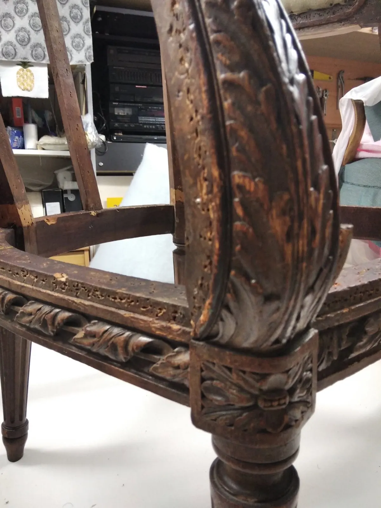
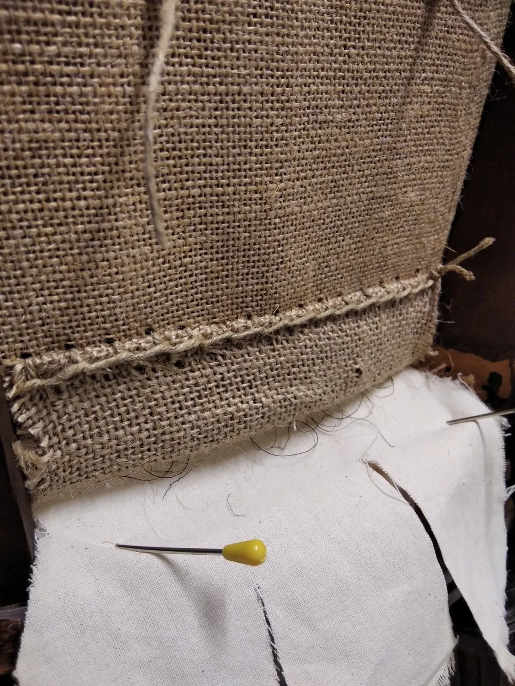
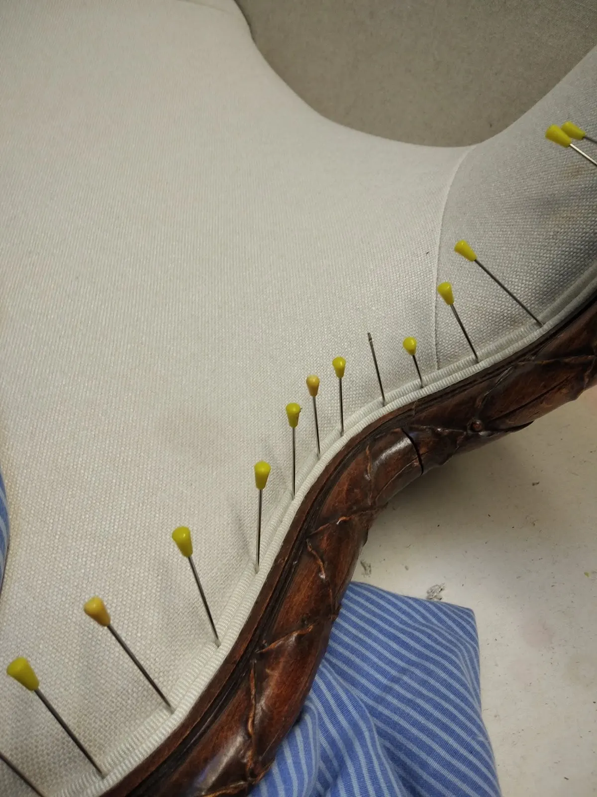
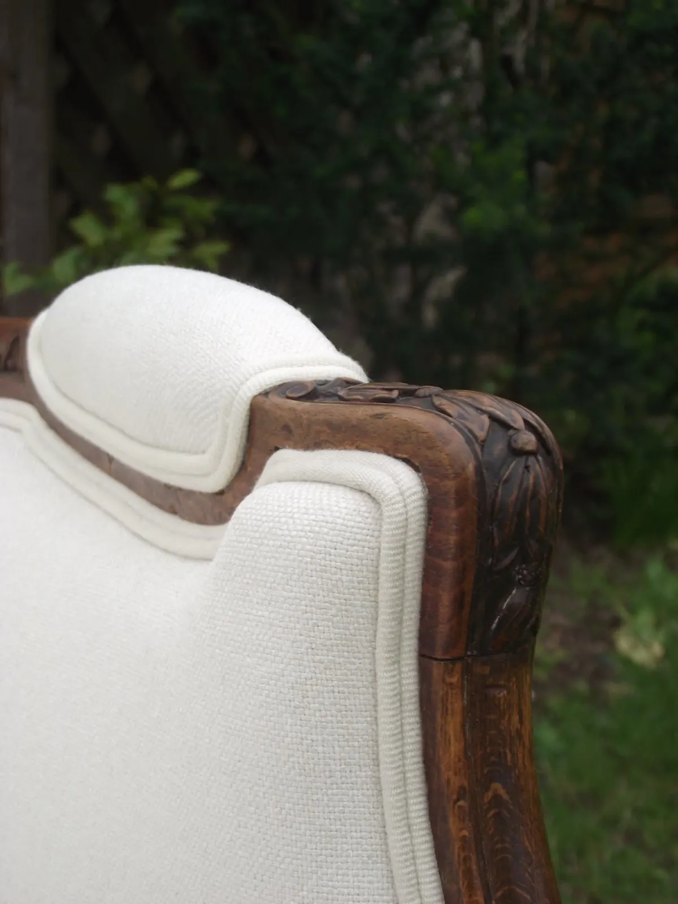
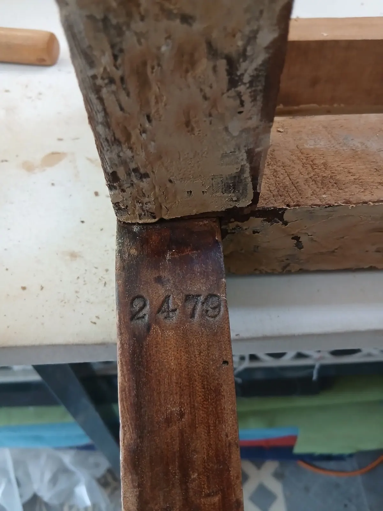
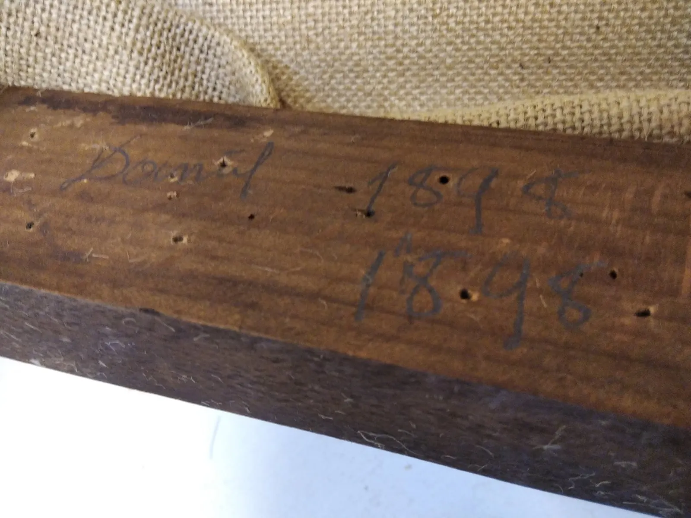
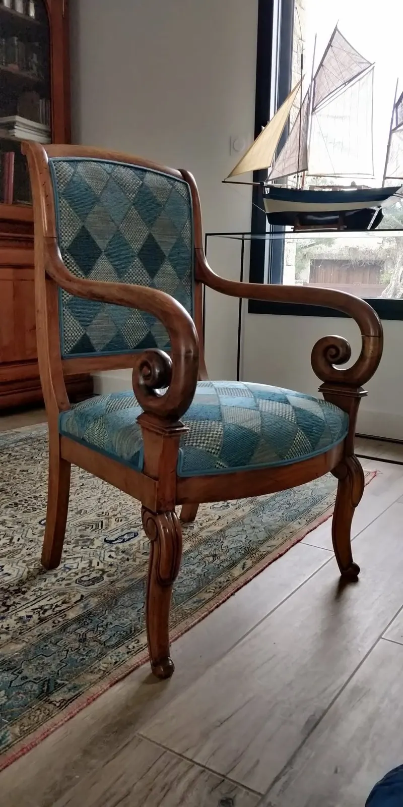
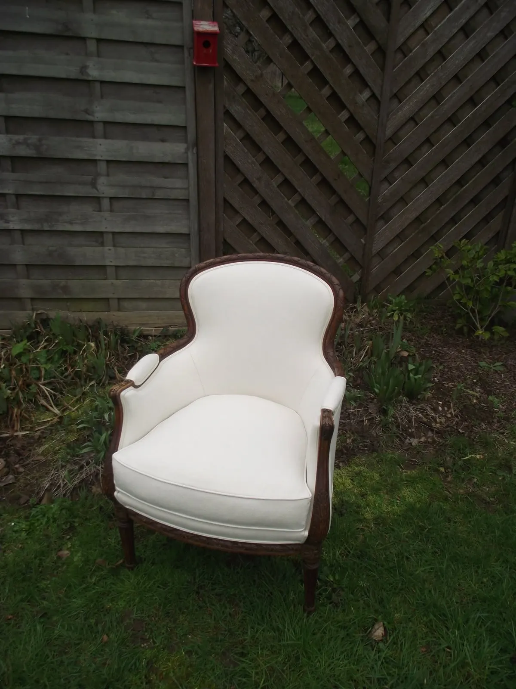

Fauteuils, bergères, sièges de style : l'atelier remet à nu la carcasse, coud la toile de jute, tend et épingle le tissu le long du bois, jusqu'au siège qui rentre chez vous.
Tapissier décorateurCouture et tapisserie d'ameublement
Fauteuils et bergèresDu siège de style au fauteuil de salon
Ouvert lundi et mardiÀ partir de 9 h 30
25 allée de Kerpayen56000 Vannes
Sous le tissu, un fauteuil se reprend couche par couche
Des sièges passés par l'atelier, de la carcasse sculptée au dossier fini : chaque étape se lit sur les photos prises à l'établi.

Premier temps
La carcasse mise à nu
Garniture retirée, le bois sculpté se nettoie et se révèle.

Deuxième temps
La toile de jute cousue
Jute et ficelle d'abord, la toile blanche vient par-dessus.

Troisième temps
Le tissu tendu
Il se tend sur l'assise, épinglé au ras du bois sculpté.

Dernier temps
Le siège fini
Dossier blanc, bois sculpté : le siège est prêt à repartir.
Ce que le bois raconte
« Après un gros nettoyage sur cette ancienne carcasse de fauteuil, je découvre un numéro de série. Ce n'est pas grand-chose mais ça me touche à chaque fois. »
Noté à l'atelier, carcasse numéro 2479

N° 2479

1898, au crayon sous la traverse


De retour dans son intérieur
Ce fauteuil de style Restauration a retrouvé sa place, regarni d'un tissu bleu-vert à losanges et souligné d'un galon.
Style
Restauration, accoudoirs à crosses
Tissu
Quintana, édition JAB
Galon
Double corde, Houlès
« J'aime quand mes clients me font partager le résultat final in situ. »
Un siège à reprendre ?
Appelez l'atelier ou écrivez, avec une photo du fauteuil si vous l'avez sous la main. L'atelier est allée de Kerpayen, à Vannes.